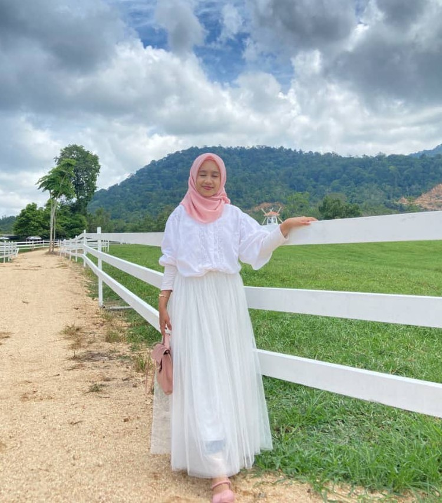

⊹₊˚‧︵‿₊୨ᰔ𝙉𝙪𝙧 𝘼𝙣𝙞𝙚𝙨 𝘽𝙖𝙩𝙧𝙞𝙚𝙨𝙮𝙖ᰔ୧₊‿︵‧˚₊⊹
🫧A soft soul who collects cozy songs, gentle pages & small, sparkling moments.🫧
⋅˚₊‧ ୨୧ ‧₊˚ ⋅ 𝘐 𝘸𝘢𝘴 𝘣𝘰𝘳𝘯 𝘰𝘯13 𝘖𝘤𝘵𝘰𝘣𝘦𝘳 2005 𝘢𝘯𝘥 𝘐'𝘮 20 𝘺𝘦𝘢𝘳𝘴 𝘰𝘭𝘥.𝘒𝘦𝘭𝘢𝘯𝘵𝘢𝘯 𝘪𝘴 𝘮𝘺 𝘩𝘰𝘮𝘦𝘭𝘢𝘯𝘥, 𝘢𝘯𝘥 𝘪𝘵’𝘴 𝘸𝘩𝘦𝘳𝘦 𝘐’𝘮 𝘤𝘶𝘳𝘳𝘦𝘯𝘵𝘭𝘺 𝘭𝘪𝘷𝘪𝘯𝘨. 𝘐’𝘮 𝘤𝘶𝘳𝘳𝘦𝘯𝘵𝘭𝘺 𝘪𝘯 𝘮𝘺 𝘧𝘪𝘯𝘢𝘭 𝘴𝘦𝘮𝘦𝘴𝘵𝘦𝘳 𝘢𝘵 𝘜𝘪𝘛𝘔 𝘔𝘢𝘤𝘩𝘢𝘯𝘨, 𝘴𝘵𝘶𝘥𝘺𝘪𝘯𝘨 𝘐𝘯𝘧𝘰𝘳𝘮𝘢𝘵𝘪𝘰𝘯 𝘔𝘢𝘯𝘢𝘨𝘦𝘮𝘦𝘯𝘵.
